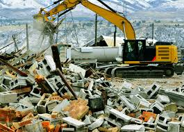

Estrategias de eliminacion y disposición de residuos de contrucción

El gran desarrollo de una ciudad contiene obras de infraestructura en su mayoría, contando que estas obras de infraestructura abarcan con altos niveles de residuos sólidos en los que se encuentran los Residuos de Construcción y Demolición. Estos Residuos de construcción en la mayoría de los casos no están siendo utilizados adecuadamente, ya que se han presentado pérdidas significativas por mala disposición y uso incorrecto lo cual traen consigo la afectación directa al medio ambiente, aumentan el consumo de energía y la explotación de los recursos naturales, sin dejar a un lado los riesgos directos e indirectos causados sobre la salud humana y demás seres vivos.
El proyecto propone la identificación en mecanismos de eliminación de los residuos de construcción y demolición en la ciudad de Sogamoso, Boyacá, contando con el diseño de estrategias para la gestión y disposición de estos residuos, El proyecto comenzara analizando normativas vigentes respecto a los RCD contextualizadas en la ciudad en la que se trabajara contando con normativas presentadas por el Ministerio de Ambiente y Desarrollo Sostenible que tratan la gestión y disposición de estos residuos de manera actualizada, este análisis debe contar con información de funcionarios públicos y personas que hagan parte de la construcción ya que se debe identificar la posición en la que se encuentra Sogamoso respecto a esta problemática y los mecanismos de eliminación, de esta manera contribuir a la mejor de la planeación sobre la gestión de residuos de construcción, estas estrategias serán diseñadas con ayuda de un profesional ambiental. Por último, las estrategias propuestas en el proyecto se socializarán en una página web, la cual se desarrollará en el transcurso de la investigación de manera en que la página web contenga información actualizada sobre los RCD, contenga información acerca del propósito del proyecto y sobre todo las estrategias diseñadas en el proyecto
Este proyecto se hace con el fin de contribuir en una problemática ambiental y con el desarrollo sostenible del medio ambiente considerando que este tipo de proyectos ayudan a la implementación y conocimiento acerca de la economía circular en la que hacen parte procesos como el reciclaje donde se recolectan y tratan materiales con el fin de crear otros nuevos a partir de residuos, en este caso serían los RCD. Las estrategias que se diseñaran en el proyecto mitigan el impacto ambiental y aportan a el avance de una sociedad implementando procesos ambientales. Asimismo, el socializar las estrategias en una página web con el fin de que la sociedad haga parte de este tipo de información, ya que en gran parte esta mala disposición de estos residuos se debe a la desinformación por parte de los funcionarios públicos y personas del común.
Estrategias para la eliminacion y aprovechamiento de los residuos de construcción
1. Como primera alternativa es importante garantizar una adecuada identificación, separación
y clasificación de los residuos de construcción y demolición, debido a que los residuos son
mezclados e imposibilita su aprovechamiento
2. Sistemas de información y divulgación en el uso potencial de los RCD provenientes de las
construcciones, reforzando las capacitaciones al personal de trabajo. Lo anterior teniendo
en cuenta qué hay poco conocimiento en el uso y aprovechamiento que se le pueden dar a estos
Residuos
3. En cuanto a los usos de los RCD se conoce que estos pueden ser usados como material de
relleno en estructuras de pavimentos, siempre y cuando cumpla con las especificaciones
técnicas.
4. Teniendo en cuenta la resolución 1257 de 2021, por me dió del cual se reglamenta la
gestión integral de RCD, es importante reforzar la divulgación de la norma, debido a que a
través de los resultados obtenidos se evidencia la falta de información y procedimientos en
el adecuado manejo de los RCD
5. Establecer áreas de acopio temporal de RCD dentro de las construcciones, para la correcta
clasificación y aprovechamiento de los RCD generados
6. La reutilizacion de RCD en otras obras es una alternativa, siempre y cuando no estén
mezclados con materia orgánica, plásticos, maderas, hierro o sustancias peligrosas
7. La arena, grava, y demás materiales áridos, concreto y cemento se pueden utilizar como
base para carreteras y para nivelar y estabilizar el suelo y terraplenes
8. De acuerdo con estudios se conoce que los materiales con alta probabilidad a ser
aprovechados y/o reciclados son: concreto, cerámicos, ladrillos, adoquines, fachadas